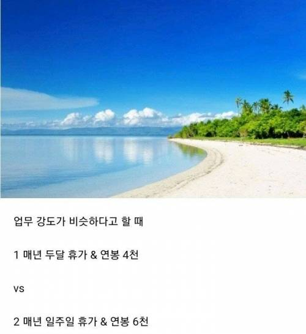

개씹닥전아님?

개씹닥전아님?
학원을 몇개를 돌림..?
닥후 2달쉬는것도 돈이있어야 가능한거지
1달 급여가 1천만원이 안되는데 닥후지
그냥 혼자 평생산다치면 전자도 나쁘진않은데
대충 계산해보면 365일중 주말+공휴일 120일제외
245일
전자는 195일 근무 4000 일당 20만원쯤
후자는 240일 근무 6000 일당 25만원쯤
전자로 20년 일해서 8억버느니
후자로 13년 일하고 8억4천 벌고 7년 노는게 더 나아보이는데?
보통 다들 그렇게 정년까지 일함. 후자 골라서 13년 근무하고나면 그땐 앞으로 7년 더 일하면 벌수있는 돈 생각나서 일 못그만둠
단순 계산상은 그런데 젊을때 시간과 늙어서의 시간은 가치가 다르다고 봄
나도 20대초반때 그렇게 생각했는데
지금은 뭐 그게그거란 생각이 들어..ㅋ
후자
우리나라 평균 임금이 3800인데
4000으로 올려주는데 휴가는 두달로 늘려준다고?
분명 불법적인 일을 하는것
평생 4천 고정이면 후자
안할래요
후
현실은 연봉3천에 일주일휴가라고
1번 조건하고 비비려면 6천이 아니라 8천쯤 돼야됨
백수안됨?
4천만원에 휴가 3일 드리겠습니다
연봉 4천에 1주일 휴가 어디감
현실은 1주일도 길어서 연차 차감 3일입니다
세전임?
난 2번
교사 수요가 항상 꿀통인 이유
닥후
저기서 둘 다 3천쯤 빼면 현실에서도 선택 가능하다 ㅋㅋ
돈이 우선이지 무슨..
올해 선임(대리급) 1년차라 영끌 1장이상이고 연차 24일넘어가는데 둘다 안고를래...
앞을 택하는 사람도 있겠지만 ... 난 속물이라 후자가 더 끌린다.
2000만원이면 우리아이 1년치 학원비야